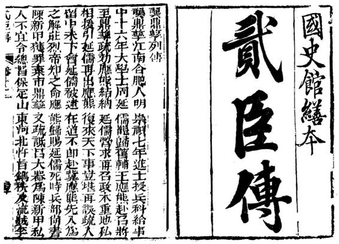

颜降附，岂得复谓之完人？即或稍有片长足录，其瑕疵自不能掩。[5]
颜降附，岂得复谓之完人？即或稍有片长足录，其瑕疵自不能掩。[5]历来合肥本地所产名人，包拯、李鸿章以外，龚鼎孳排第三。虽然现在普通人绝少知道这名字，但在自己那个时代，他可是名声籍甚。而合肥的三大名人，除了名气、地位相近，还构成奇特的组合。“包青天”无人不知，那是古代公卿的正面典型；李鸿章正好相反，至少过去很长一段时间，他“臭名昭著”；在这一好一坏、一正一邪之外，龚鼎孳则补上另一种类型——他是所谓“贰臣”的代表。
“贰”，有反复、不一、变易、可疑堪忌之意。郑玄：“变易无常谓之贰。”[2]杜预：“贰，违命也。”[3]它既不像“忠”，一目了然地善；又不像“奸”，一目了然地恶。作为人格，重心在于被打上了问号。
乾隆四十一年十二月庚子（1777年1月11日）发布上谕，“命国史馆编列明季贰臣传”[4]。什么人列在其中呢？
若而人者，皆以胜国臣僚，乃遭际时艰，不能为其主临危授命，辄复畏死倖生，颜降附，岂得复谓之完人？即或稍有片长足录，其瑕疵自不能掩。[5]
胜国，指前明。亦即，凡曾在前明为官复又供职本朝者，都是收录对象，其中不乏劳苦功高者，如洪承畴。单就这一点来看，入《贰臣传》也不意味着就是“反面人物”。不过，乾隆还有进一步的要求，命“查考姓名事实，逐一类推，编列成传，陆续进呈”。[6]逐一类推，是要区别对待、有扬有抑的意思。根据这个要求，最终形成共计一百二十余人的名单，分为甲、乙二编。入甲编的，为降附之后品节无亏者（自清廷看来）；入乙编的，是既已降附而又为人猥琐者（同样是自清廷看来）。龚鼎孳列在乙编；因为乾隆的上谕一开始就点到他的名字，给他定了调：
合肥鱼花塘•稻香楼
鱼花塘是古庐州府护城河一段。图中左前方林丘上数楼，即当代新建的稻香楼宾馆。从前的稻香楼为龚家产业，龚鼎孳携顾媚数次回合肥，就住在稻香楼内。

《贰臣传》•龚鼎孳列传
乾隆四十一年颁旨， 命将由明入清的文武百官编入《贰臣传》。分甲、乙二编，龚鼎孳在乙编。
如王永吉、龚鼎孳、吴伟业、张缙彦、房可壮、叶初春等，在明已登仕版，又复身仕本朝，其人既不足齿，其言岂当复存。[7]
贰臣现象本身并不足奇。每当朝代新创，人材稀缺都是突出问题。面对骤增的理政需求，新朝总是设法罗致一切有用之人，为己服务。这当中，前朝旧吏始终是一大来源。所以只要改朝换代，贰臣现象无可避免。清初不但概莫能外，实际上，顺、康两朝为使更多士子出来做事，不光加以利诱，还施展了威逼、强迫的手段。当时，抵制情形颇为严重。《桃花扇》尾声，出现了一个县衙的皂隶，说：“现今礼部上本，搜寻山林隐逸。抚按大老爷张挂告示，布政司行文已经月余，并不见一人报名。府县着忙，差俺们各处访拿。”[8]这是实录。可是时过境迁，清廷翻脸不认账，倒打一耙，转而以道德高调斥责别人“畏死倖生，颜降附”。难怪谭嗣同论到此事，把它比做“始乱终弃”：
而必胁之出仕，不出仕则诛，是挟兵刃搂处女而乱之也。既乱之，又诟其不贞、暴其失节，至为《贰臣传》以辱之。[9]
但清廷的出尔反尔，有难言之隐。
其一，它有隐患。去今未远的三藩之叛，吴三桂、尚可喜、耿精忠，都曾是满清招降纳叛的成果，但到头来，成果也变成苦果。当时挖别人墙脚，如今要警惕自己的墙脚。于是，从降叛的怂恿者改为诅咒者，从热衷吊膀子变成了鼓励贞操。“崇奖忠良”、“风励臣节”[10]的实质，不过如此。
其二，清初贰臣现象不同以往。历史上的归顺者，大多自认顺天承命、弃暗投明、有如新生，明清之际却不然。由明入清的诸多士大夫，一面在新朝供职，一面在心理和感情上苦苦挣扎。羞惭不安者有之，悔而抽身者有之，乃至还有暗中同情、支持复明运动的。而这种状况并非一朝一夕，迁延甚久，即便经过了康熙大帝那么辉煌的文治武功，汉族士夫的心态也没有彻底扭转。所以我们看到，满清定鼎已然八十余年，雍正皇帝还在那里愤愤不平地指斥：
不知文章著述之事，所以信今传后，著劝戒于简编，当平心执正而论，于外国入承大统之君，其善恶尤当秉公书录，细大不遗。庶俾中国之君见之，以为外国之主且明哲仁爱如此，自必生奋励之心，而外国之君见是非之不爽，信直道之常存，亦必愈勇于为善，而深戒为恶，此文艺之功，有补于治道者当何如也。倘故为贬抑淹没，略其善而不传，诬其恶而妄载。[11]
他认为，爱新觉罗氏遭遇了严重不公。尽管“政教兴修”、“万民乐业”、“黄童白叟，一生不见兵革”，但就因是“外国入承大统之君”，士夫阶层的一般舆论与心理，仍“故为贬抑淹没，略其善而不传，诬其恶而妄载”。其之所陈，确为事实。这就是清初贰臣问题的特殊性，与普通的改朝换代不同，清之代明，与文化、民族冲突深深缠绕，融入了特定心态。故也难怪为何贰臣现象自古皆有，唯独清廷才搞什么《贰臣传》。我们固可笑其气量褊隘，但不要忘了，它从中所受窘迫也是既往所无。